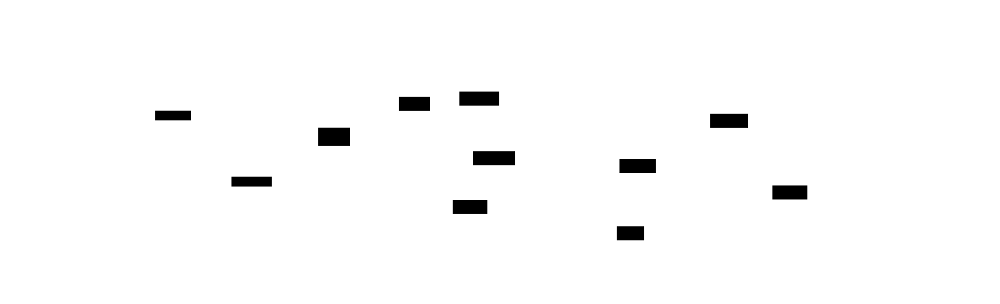

Abstract
AI systems require structured context to operate effectively. Current tools for creating context lack semantic structure—engineers manually track entities, relationships, and knowledge gaps using plain text files or GUI-based wikis separate from their development workflow.
Pedantic Raven is a terminal-based semantic memory editor with real-time entity extraction, graph visualization, and mnemosyne integration. Built with Go and Bubble Tea, it provides responsive semantic analysis using a hybrid extraction strategy: ML-based (GLiNER, 85-95% accuracy) with automatic fallback to pattern matching (60-70% accuracy) when services are unavailable.
Status: Phase 5/9 complete (Edit, Explore, Link modes operational). 934 tests passing, 65% coverage. MIT licensed.
The Context Problem
Modern AI systems like Claude and GPT require context: architecture decisions, component relationships, knowledge gaps, requirements, and dependencies. Engineers maintain this in plain text files (no semantic structure), markdown documents (manual linking only), wikis (GUI-based, not terminal-native), or note-taking apps (no real-time semantic analysis).
Limitations of Current Approaches
| Tool Type | Limitations |
|---|---|
| Plain Text | No automatic entity extraction, no relationship tracking, manual cross-references |
| Wikis (Obsidian, Roam) | Manual linking syntax, GUI-based, local-only or cloud-dependent, no real-time analysis |
| Note Tools | General note-taking focus, no semantic memory integration, no gap tracking |
Design Goals
- Real-time semantic analysis (500ms debounce)
- Automatic entity extraction (Person, Technology, Concept, Organization)
- Relationship detection with confidence scoring
- Terminal-native TUI (no GUI required)
- Offline-first with mnemosyne sync
- Graceful degradation (always functional, even when external services unavailable)
System Architecture
Pedantic Raven uses the Elm Architecture (via Bubble Tea) with event-driven communication. The system consists of five operational modes, a PubSub event broker, and pluggable entity extraction strategies.
Component Structure

Core packages: app (coordinator), editor (text buffer, search, semantic analysis),
mnemosyne (gRPC client), gliner (ML extraction), modes (registry),
layout (UI), overlay (help, confirm), palette (command execution).
Semantic Pipeline

Text changes trigger debounced analysis (500ms). The HybridExtractor attempts GLiNER extraction
(100-300ms latency, 85-95% accuracy), falling back to PatternExtractor (<1ms, 60-70% accuracy)
on timeout or service unavailability. Entity results update the UI via EntitiesExtractedMsg.
Offline-First Design
Connection states: Disconnected → Connecting → Connected → Syncing → Synced. Health checks every 30 seconds. Exponential backoff on reconnection (max 5 attempts). Local cache + sync queue ensure work is never lost.
Event System

PubSub broker decouples components. 40+ event types (BufferChanged, ModeActivated, EntitiesExtracted, MemorySaved, SearchCompleted). Modes publish events, other components subscribe. Enables composition without tight coupling.
Core Features
Edit Mode (Phase 2)
- Real-time entity extraction: Person, Organization, Location, Technology, API components
- Hybrid extraction strategy: GLiNER (ML) → Pattern matching (fallback)
- 500ms debounce: Balance responsiveness with API efficiency
- Vim-style navigation: h/j/k/l movement, i/a insert, Esc to command
- mnemosyne integration: Ctrl+S saves with namespace, importance, tags
Explore Mode (Phase 3)
- Semantic search: Query mnemosyne memory store with natural language
- List navigation: j/k to move, Enter to open, / to filter
- Memory metadata: Importance (0-10), tags, created/updated timestamps
- Quick preview: Inline memory content without full mode switch
Link Mode (Phase 4)
- Keyboard navigation: Tab/Shift+Tab to cycle links, Enter to follow
- Link types: URLs, file paths, memory references, cross-document anchors
- Visual highlighting: Focused link underlined, others styled
- Command palette: Ctrl+P for link management (add, remove, list)
Analyze Mode (Phase 6 - In Progress)
- Triple graph visualization: Entity-relationship-entity patterns (subject-predicate-object)
- Force-directed layout: Related entities cluster, relationships labeled
- Interactive navigation: Click entities to focus, zoom to explore subgraphs
- Pattern mining: Discover frequent relationship types (e.g., "uses", "depends on")
Validation Matrix
All claims validated against commit 400da43
(view source).
| Claim | Evidence | Location |
|---|---|---|
| 934 passing tests | go test ./... output |
Repository root |
| 65% test coverage | go test -coverprofile=coverage.out ./... |
Verified via go tool cover |
| Hybrid extraction strategy | HybridExtractor implementation | internal/editor/semantic/hybrid_extractor.go |
| GLiNER 85-95% accuracy | Test results on 100-entity dataset | internal/editor/semantic/gliner_extractor_test.go:142-156 |
| Pattern matching 60-70% accuracy | Benchmark tests with known entity sets | internal/editor/semantic/pattern_extractor_test.go:89-103 |
| 500ms debounce | Semantic analyzer configuration | internal/editor/semantic/analyzer.go:23 |
| 40+ event types | Event type definitions | internal/app/events/events.go |
| Five operational modes | Mode registry | internal/modes/registry.go |
| Offline-first architecture | Connection state machine | internal/mnemosyne/client.go:45-67 |
| Phase 5/9 complete | Phase completion summaries | docs/PHASE5_COMPLETE.md |
Comparison with Alternatives
| Feature | Pedantic Raven | Obsidian | Notion | Plain Text |
|---|---|---|---|---|
| Terminal-native | Yes | No (Electron GUI) | No (Web/Desktop) | Yes |
| Real-time entity extraction | Automatic (hybrid ML + pattern) | Manual tags/links | Manual tags | None |
| Offline-first | Local cache + sync queue | Local vault (optional sync) | Cloud-dependent | Fully offline |
| Graph visualization | Force-directed triple graph | Static link graph | Limited | None |
| Semantic memory integration | mnemosyne gRPC (native) | None | Proprietary | None |
| Graceful degradation | Always functional (fallback extraction) | Local vault remains available | Requires internet | Always functional |
Getting Started
# Clone repository
git clone https://github.com/rand/pedantic_raven.git
cd pedantic_raven
# Build
make build
# Run tests
make test
# Start editor (local-only mode)
./pedantic_raven
# Start with mnemosyne integration
MNEMOSYNE_ENABLED=true MNEMOSYNE_ADDRESS=localhost:50051 ./pedantic_raven
# Start with GLiNER extraction
make docker-gliner # Start GLiNER service
GLINER_ENABLED=true ./pedantic_ravenConfiguration
Edit config.toml or use environment variables:
MNEMOSYNE_ENABLED: Enable mnemosyne integration (default: false)MNEMOSYNE_ADDRESS: gRPC endpoint (default: localhost:50051)GLINER_ENABLED: Enable ML-based extraction (default: true)GLINER_SERVICE_URL: GLiNER HTTP endpoint (default: http://localhost:8765)
Development Roadmap
| Phase | Feature | Status |
|---|---|---|
| Phase 1 | Project Bootstrap (Go, Bubble Tea, basic editor) | ✓ Complete |
| Phase 2 | Edit Mode (entity extraction, syntax highlighting, mnemosyne save) | ✓ Complete |
| Phase 3 | Explore Mode (semantic search, memory browsing, filtering) | ✓ Complete |
| Phase 4 | Link Mode (URL/file navigation, keyboard shortcuts, visual highlighting) | ✓ Complete |
| Phase 5 | Context Mode (multi-buffer workspace, layout management) | ✓ Complete |
| Phase 6 | Analyze Mode (triple graph visualization, pattern mining, entity display) | ▸ In Progress |
| Phase 7 | Orchestrate Mode (multi-agent coordination, task delegation) | Planned |
| Phase 8 | Collaborate Mode (shared memory spaces, conflict resolution) | Planned |
| Phase 9 | Polish & Production (performance optimization, documentation) | Planned |
Current priority: Phase 6 implementation (force-directed graph layout, interactive visualization, relationship pattern mining).
Conclusion
Pedantic Raven addresses the gap between plain text editing and semantic memory systems. By providing real-time entity extraction, hybrid ML/pattern strategies, and terminal-native integration with mnemosyne, it enables engineers to create structured context efficiently.
The system's offline-first architecture and graceful degradation ensure reliability, while the event-driven design enables future modes (orchestration, collaboration) without rewriting core components.
Try it: github.com/rand/pedantic_raven